@jdawsey1
📝 原文: Trump Orders Leak Probe After Venting About Media Coverage of Munitions Stockpile - WSJ
🇨🇳 译文: 特朗普在媒体报道弹药库存后下令进行泄漏调查 - 华尔街日报

🕒 2026-08-06T23:44:14+00:00
| 来源 | 旧窗口内数量 | 本次新增 | 本次淘汰 | 当前窗口内共有 |
|---|---|---|---|---|
| 推文 + Dawn 新闻 | 0 | 78 | 0 | 78 |
| ARY News | 0 | 0 | 0 | 0 |
注：淘汰数 = 旧窗口内数量 + 本次新增 - 当前窗口内共有
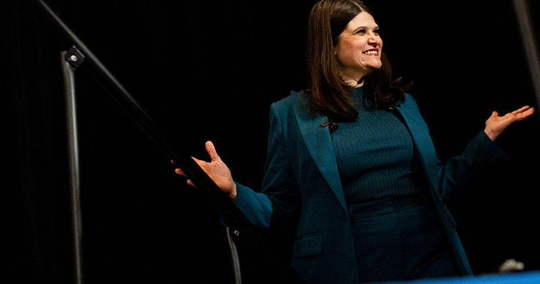


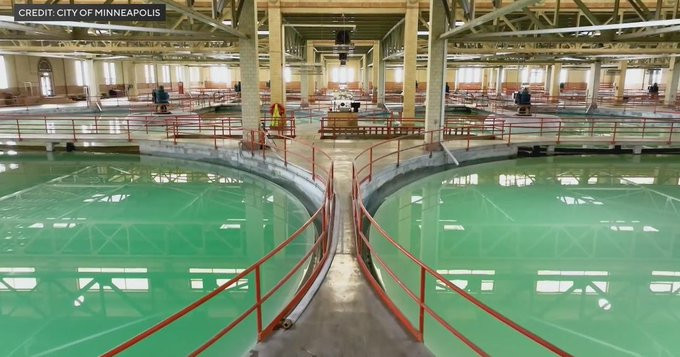
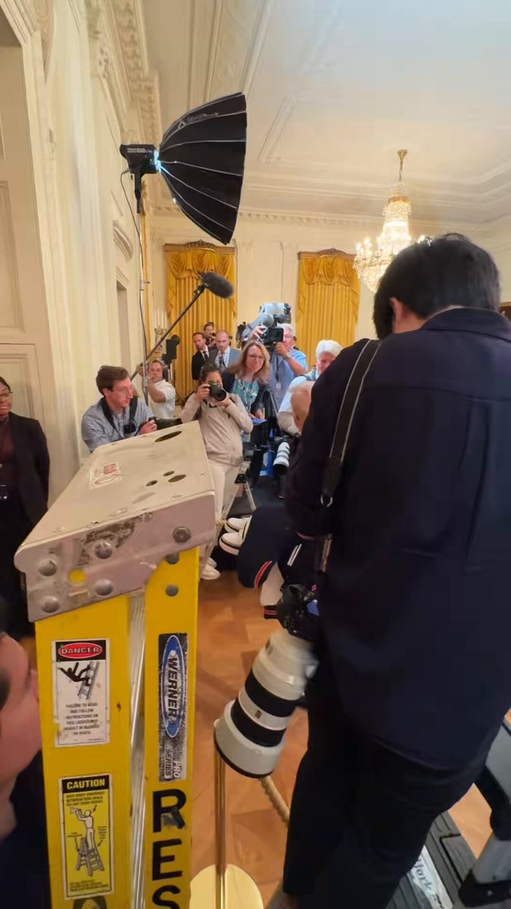
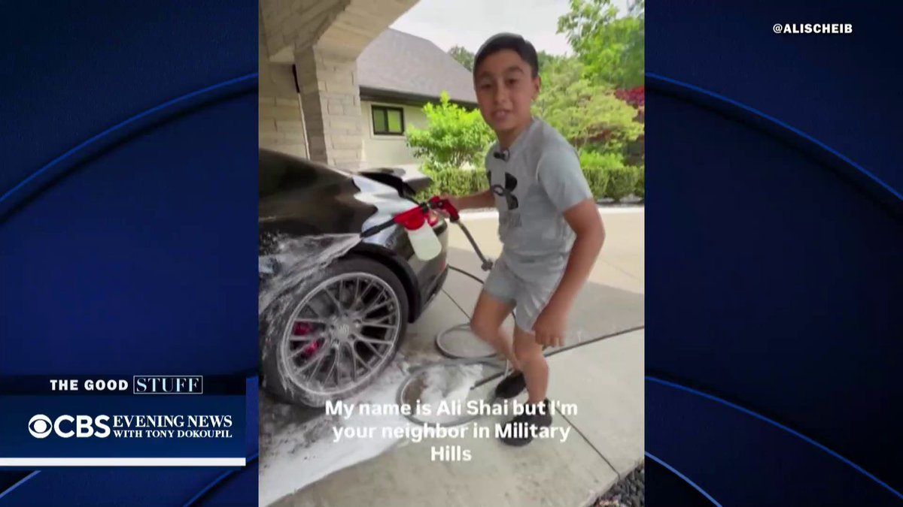
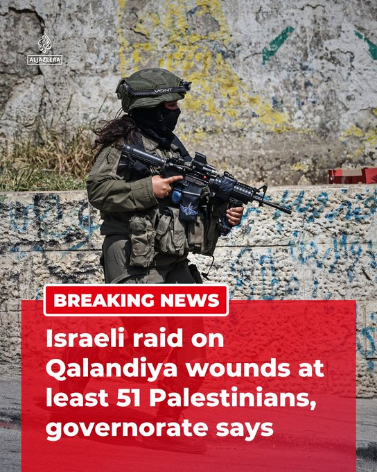
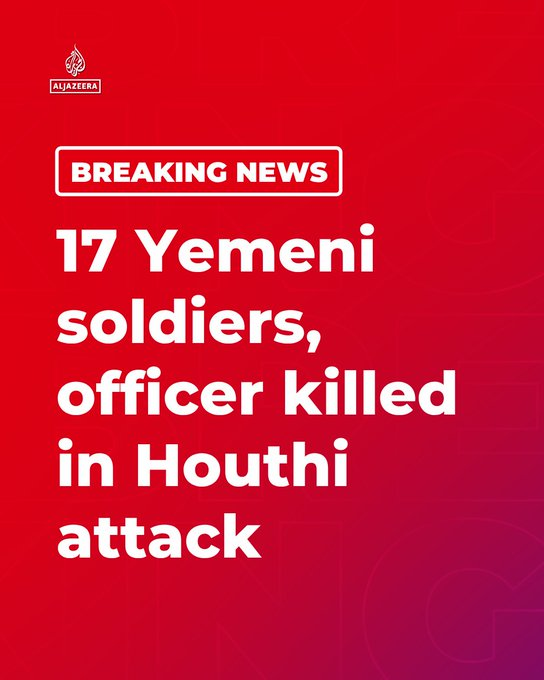
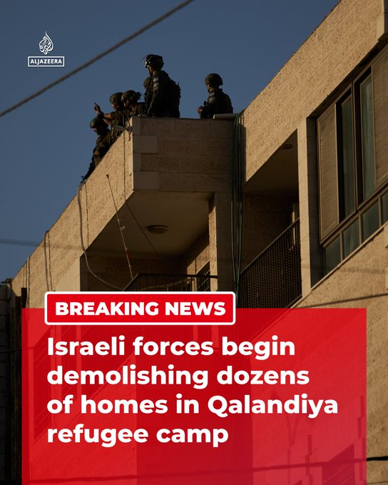
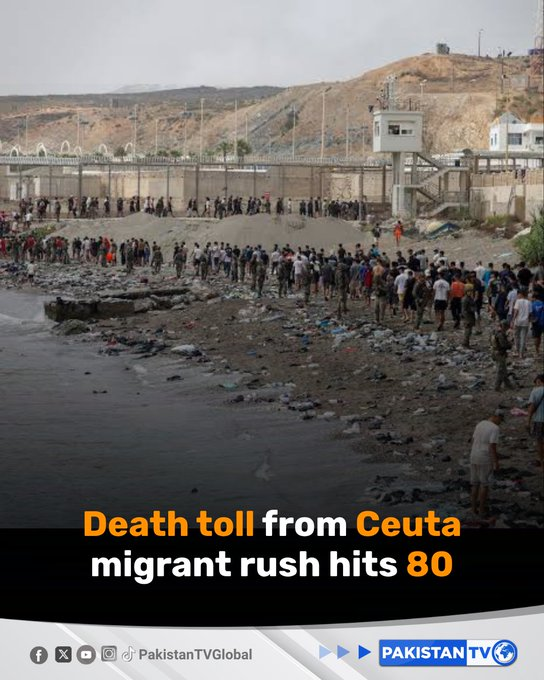
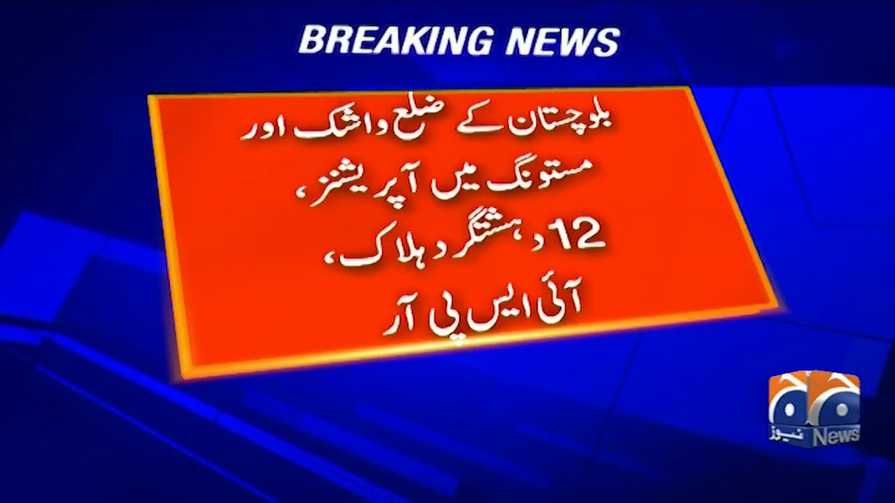


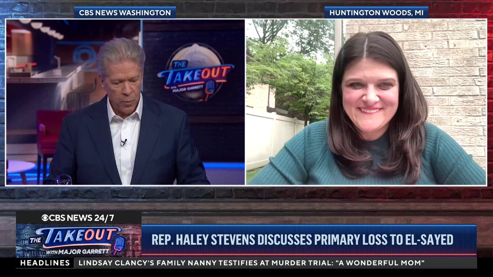
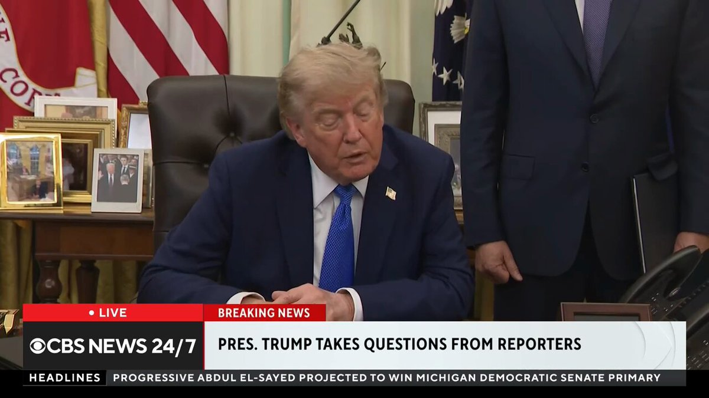
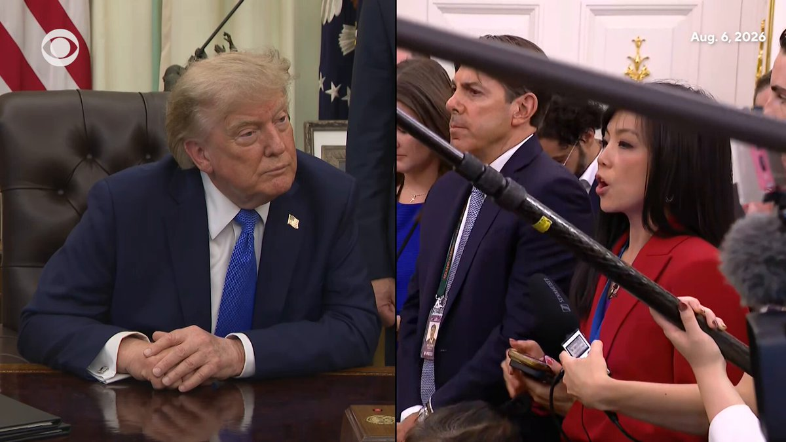
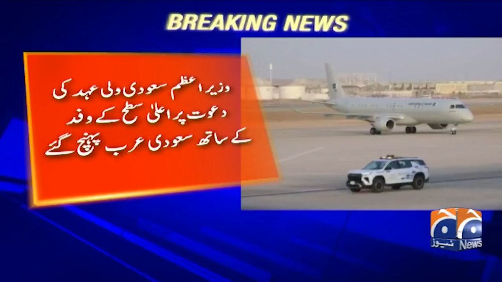


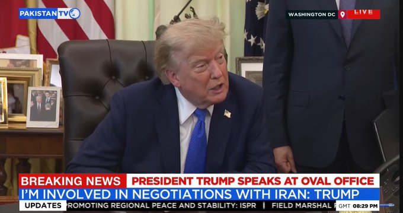


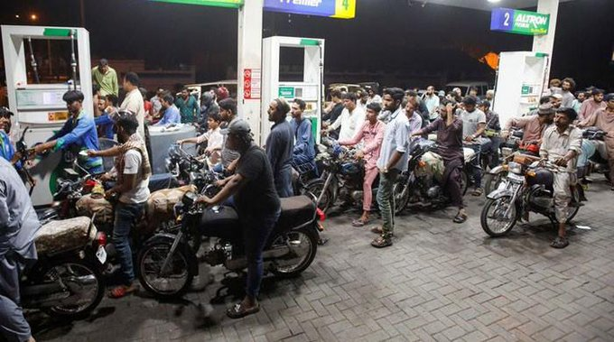

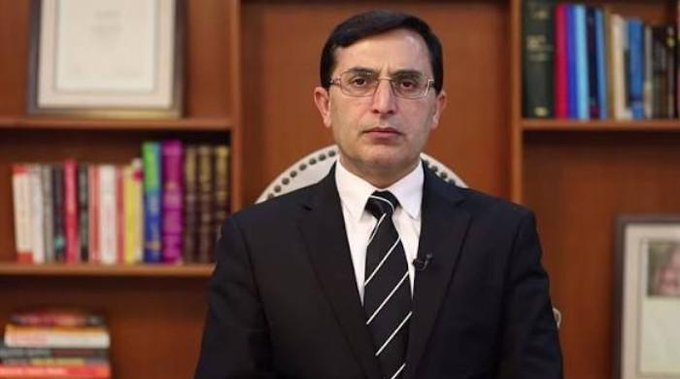

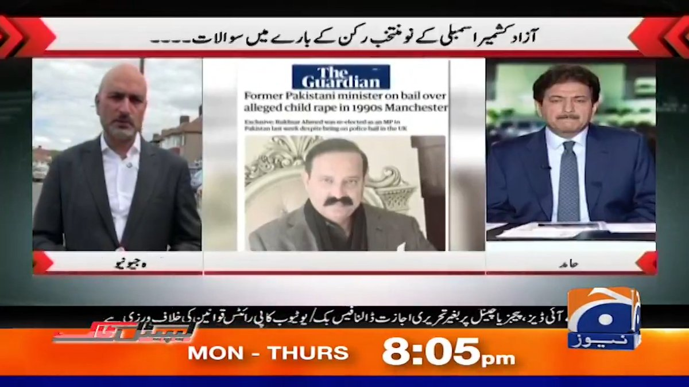

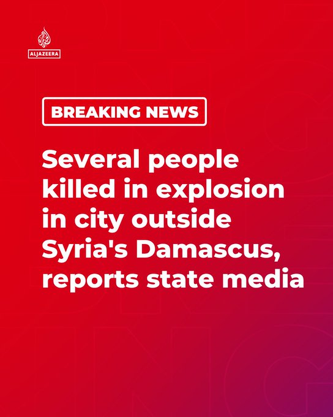